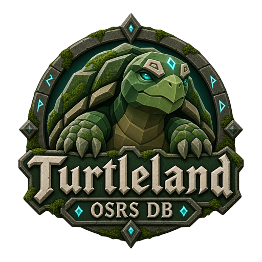

A little order for your adventures
Big goals.
Steady progress.
Your accounts, calculators, and next big goal—all in one little corner of Gielinor.
Turtleland is a free Windows companion for Old School RuneScape, made by a player who likes keeping the turtles in a row.
Free to download. Support is always optional.

..For your big adventures
01 / ACCOUNTS
Your roster, together.
Keep your characters and their stats in one place.
02 / GOALS
Always a next step.
Build a plan and follow your progress toward it.
03 / CALCULATORS
Less guesswork.
Work out the numbers before your next grind.
Made with care, one update at a time
Help keep Turtleland growing.
If it makes your adventures a little easier, a beer helps support its development. Thanks for being here.